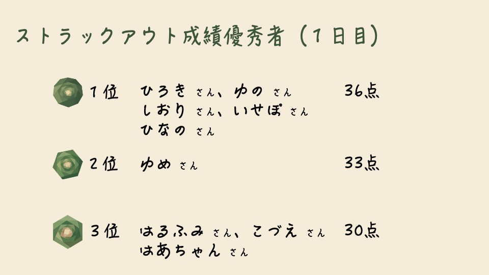
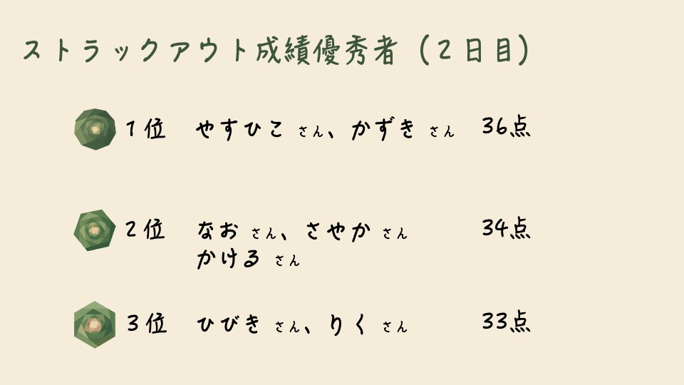

11月1日、2日に大東文化大学板橋キャンパスで開催された第101回大東祭に出展しました！ 昨年に引き続き、実際にモルックの試合を体験できる試合ブースと、初めてモルックに触れる方でも気軽に楽しめる初心者向けのストラックアウトブースを展開し、多くの来場者の皆さんにモルックの魅力を体験していただきました。 試合ブースでは、ルール説明から実際の対戦までを通して、戦略性とコミュニケーションの楽しさを感じてもらえる機会となりました。友人同士や家族連れで参加される方も多く、白熱した試合が各所で繰り広げられ、会場は大いに盛り上がりました。 また、ストラックアウトブースでは、モルックが初めてという方や小さなお子さまでも気軽に挑戦できるよう工夫を施しました。的を狙ってモルックを投げるシンプルな内容ながら、多くの方が何度も挑戦し、成功した際には大きな歓声や笑顔が見られました。 2日間を通して、幅広い世代の方々にご参加いただき、モルックを身近なスポーツとして知っていただく貴重な機会となりました。参加してくださった皆さま、そして運営にご協力いただいた皆さまに心より感謝申し上げます。 今後もmölnでは、モルックの楽しさや魅力をより多くの方へ届けられるよう、学内外での活動を積極的に行ってまいります。引き続き、応援のほどよろしくお願いいたします。

